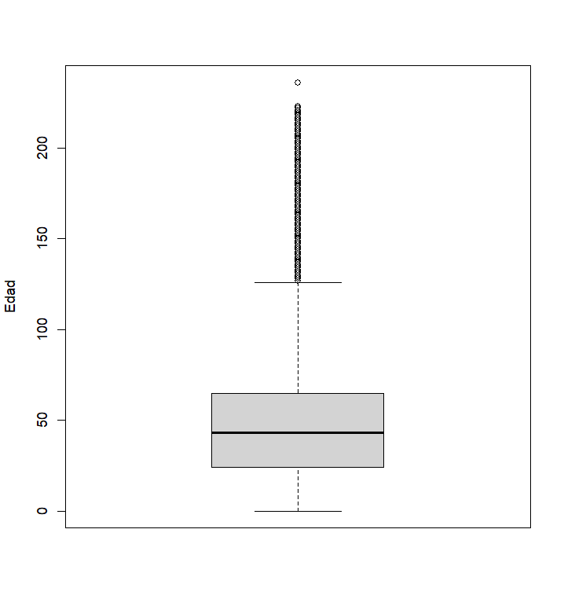
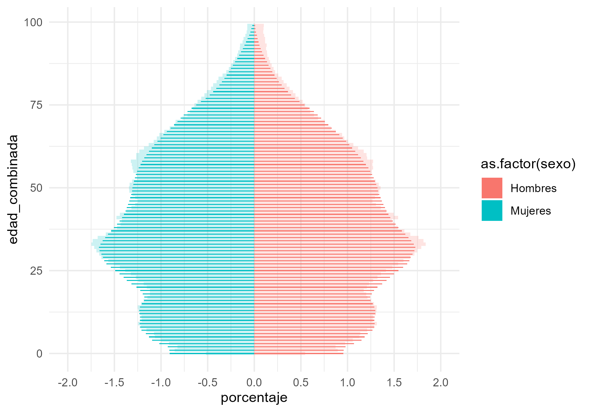
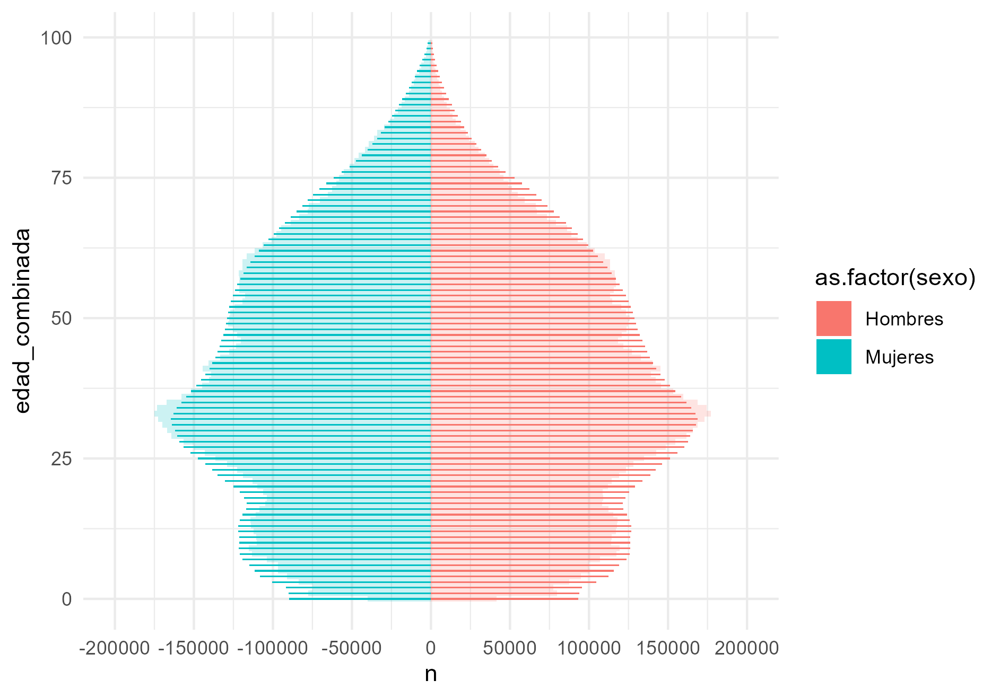
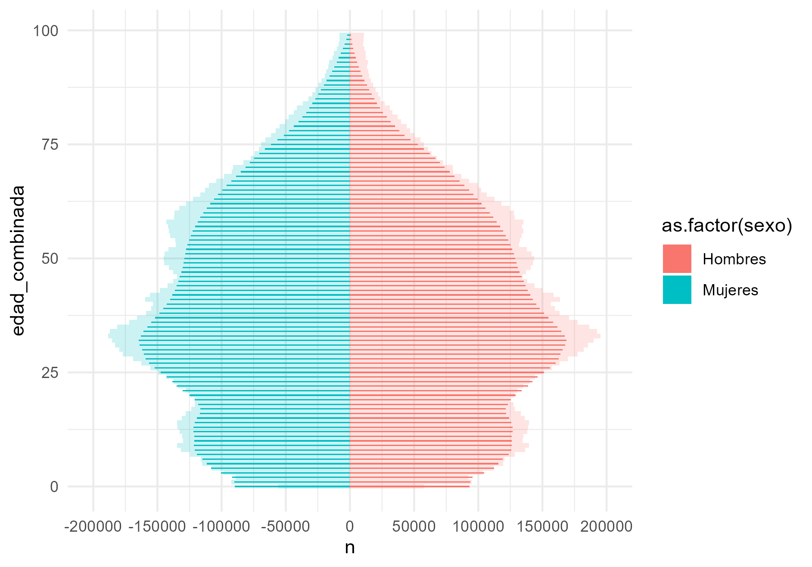

| Registro Civil | FONASA | SUSESO |
|---|---|---|
| 26.737.016 | 18.033.567 | 8.254.385 |

Mesa de Procesamiento
Proyecto Estratégico Registro Estadístico de Población (REP)
Resultados Preliminares
Agosto 2024
Introducción
Objetivo del REP:
“Compilar datos de la población permitiendo su conteo, localización y caracterización demográfica básica. Este permitirá brindar acceso a datos poblacionales desagregados, oportunos y de calidad, derivando en la disminución de costos asociados al levantamiento de datos. Además, la instalación del REP permitirá reducir las cargas en entrevistadores e informantes, entre otros beneficios.”.
Introducción
Temas:
Procesamiento
Conteos finales
Conclusiones
Procesamiento - Descarga
Actualmente las bases están en un formato de texto plano en un server de SQL.
Se realizan consultas para poder hacer las descargas.
Para el caso de SUSESO y FONASA se construyó una base anual a partir de las bases mensuales.
Dado que el Registro Civil es un compilado de runes agregado a la fecha de corte no fue necesario “construir” una base anual.
De acuerdo a lo anterior, tenemos las siguientes frecuencias iniciales:
Procesamiento - Deduplicación
Para cada una de las bases se realizó un proceso de deduplicación mediante métodos determinísticos estrictos.
Las bases de FONASA y del Registro Civil se deduplicaron usando el nombre completo y la fecha de nacimiento, en tanto, SUSESO se deduplicó usando el nombre completo y el sexo.
En el caso del Registro Civil se encontraron 775 runes duplicados y 14.837 personas duplicadas por nombre y fecha de nacimiento.
En total se eliminaron 15.665 registros duplicados, quedando un total de 26.721.351 observaciones.
Procesamiento - Deduplicación
En FONASA se encontraron 361.541 personas duplicadas por nombre y fecha de nacimiento.
Estos casos fueron clasificados de la siguiente manera:
| Casos | n | % |
|---|---|---|
| nip con match | 283.078 | 78,3 |
| nip sin match | 19.183 | 5,3 |
| sin nip con match | 3.955 | 1,1 |
| sin nip con match doble | 234 | 0,1 |
| sin nip sin match | 130 | 0,0 |
| solo nip | 54.961 | 15,2 |
| Total | 361.541 | 100,0 |
- En total se eliminaron 184.500 registros duplicados quedando un total de 17.849.067 observaciones.
Procesamiento - Deduplicación
- NIP con match
| run | nombre | fecha_nac | nip | match |
|---|---|---|---|---|
| 18.018.809-6 | Loreto Cristina Gallardo Villegas | 1991-11-08 | 0 | 1 |
| 30.985.342-4 | Loreto Cristina Gallardo Villegas | 1991-11-08 | 1 | 0 |
- NIP sin match
| run | nombre | fecha_nac | nip | match |
|---|---|---|---|---|
| 18.018.809-6 | Loreto Cristina Gallardo Villegas | 1991-11-08 | 0 | 0 |
| 30.985.342-4 | Loreto Cristina Gallardo Villegas | 1991-11-08 | 1 | 0 |
- Sin NIP con match
| run | nombre | fecha_nac | nip | match |
|---|---|---|---|---|
| 18.018.809-6 | Loreto Cristina Gallardo Villegas | 1991-11-08 | 0 | 1 |
| 19.992.815-5 | Loreto Cristina Gallardo Villegas | 1991-11-08 | 0 | 0 |
Procesamiento - Deduplicación
- Sin NIP con match doble
| run | nombre | fecha_nac | nip | match |
|---|---|---|---|---|
| 18.018.809-6 | Loreto Cristina Gallardo Villegas | 1991-11-08 | 0 | 1 |
| 19.992.815-5 | Loreto Cristina Gallardo Villegas | 1991-11-08 | 0 | 1 |
- Sin NIP sin match
| run | nombre | fecha_nac | nip | match |
|---|---|---|---|---|
| 18.018.809-6 | Loreto Cristina Gallardo Villegas | 1991-11-08 | 0 | 0 |
| 19.992.815-5 | Loreto Cristina Gallardo Villegas | 1991-11-08 | 0 | 0 |
- Solo NIP
| run | nombre | fecha_nac | nip | match |
|---|---|---|---|---|
| 31.723.123-2 | Loreto Cristina Gallardo Villegas | 1991-11-08 | 1 | 0 |
| 30.985.342-4 | Loreto Cristina Gallardo Villegas | 1991-11-08 | 1 | 0 |
Procesamiento - Deduplicación
En SUSESO se encontraron 198.377 personas duplicadas por nombre y sexo.
Estos casos fueron clasificados de la siguiente manera:
| Casos | n | % |
|---|---|---|
| nip con match | 17.248 | 8,7 |
| nip sin match | 483 | 0,2 |
| sin nip con match | 2.837 | 1,4 |
| sin nip con match doble | 175.431 | 88,4 |
| sin nip sin match | 26 | 0,0 |
| solo nip | 2.352 | 1,2 |
| Total | 198.377 | 100,0 |
- En total se eliminaron 10.977 registros duplicados quedando un total de 8.243.408 observaciones
Procesamiento - Señales de vida
Cada mes que una persona aparece en un registro funcional, da “señales de vida”.
En este sentido, se creó una variable para identificar si una persona apareció por lo menos seis meses consecutivos en las bases de SUSESO y FONASA, considerando todo el año 2023.
Los resultados muestran que un 97,4% de los registros en FONASA y un 79,5% de los registros en SUSESO muestran “señales de vida”.
En la base estas variables se llaman senal_fonasa_esc_1 y senal_suseso_esc_1. Si es igual a uno el registro tiene señal de vida, si es igual a cero no lo tiene y si es NA es porque no hizo match en el Registro Civil
| Señal de vida | FONASA | % FONASA | SUSESO | % SUSESO |
|---|---|---|---|---|
| 1 | 17.388.154 | 97,4 | 6.551.855 | 79,5 |
| 0 | 460.913 | 2,6 | 1.691.553 | 20,5 |
| Total | 17.849.067 | 100,0 | 8.243.408 | 100,0 |
Procesamiento - Vinculación
En esta etapa se realizó la unión de las tres bases, usando como base pivote el Registro Civil
La vinculación fue mediante un método determinístico el cual requiere coincidencia exacta en algún identificador, que en nuestro caso, sería el RUN.
El resultado fue un match parcial, es decir, existen registros dentro de SUSESO y FONASA para los cuales no se encontró un pareo con el Registro Civil.
| Match | FONASA | % match FONASA | SUSESO | % match SUSESO |
|---|---|---|---|---|
| 1 | 17.042.422 | 95,5 | 7.978.844 | 96,8 |
| 0 | 806.645 | 4,5 | 264.564 | 3,2 |
| Total | 17.849.067 | 100,0 | 8.243.408 | 100,0 |
Procesamiento - Vinculación

Luego de hacer la vinculación quedamos con un tabla de 27.681.644 de registros.
Dentro de esta tabla hay 8.4 millones de registros que existen solamente en el Registro Civil.
En total, cerca de 9.3 millones de registros no vincularon usando el RUN.
Procesamiento - Edición de fechas
Para las fechas de nacimiento y defunción del Registro Civil y las fechas de nacimiento de FONASA se realizaron las siguientes ediciones:
Si el año de defunción fue 2024, se imputa la fecha de defunción con 0 (“vivo”). (47.184 casos)
Fechas de nacimiento con años mayores a 2023, meses mayores a 12 o días mayores a 31 se imputan como fecha NA. (10 casos en RC y 25 casos en FONASA)
Cuando mes o día vienen con valor 0, se cambia por 1. Esto solo corre para los casos en los que hay información en año. (451.287 casos en RC y 0 casos FONASA)
Bajar de 31 a 30 cuando estamos en los meses que solo tienen 30. (35 casos en RC y 0 casos FONASA)
Bajar a 28 de febrero cuando no es año bisiesto. (972 casos en RC y 0 casos en FONASA)
Fechas con años de largo menores a 4 dígitos se imputan como fecha NA (0 casos en RC y 135 casos en FONASA)
Fechas con años menores a 1800 se imputan como fecha NA. (1 caso en RC y 57 casos en FONASA)
Luego de depurar el año, mes y día se reconstruyen las fechas (fecha_nac_cor_rc, fecha_def_cor_rc, fecha_nac_cor_fonasa)
Procesamiento - Edad
Luego de corregir las fechas se procedió a calcular la edad para el Registro Civil y para FONASA
Esta se calcula como la resta (en días) entre una fecha pivote y la fecha de nacimiento corregida. Realizamos una división entera a esta diferencia por 365.25 días para transformarla a años.
En caso de que la persona esté fallecida, se usa la fecha de defunción como fecha pivote. En caso contrario, la fecha de corte es el 31 de diciembre de 2023.
data <- data %>%
arrow::to_duckdb() %>%
mutate(fecha_pivote_rc = if_else(fecha_defuncion != "0", fecha_def_cor_rc, as.Date("2023-12-31")),
edad_rc = fecha_pivote_rc - fecha_nac_cor_rc,
edad_rc = edad_rc %/% 365.25,
edad_rc = if_else(fecha_nac_rc == "0", 99999, edad_rc, 99999),
edad_rc = if_else(edad_rc < 0, 99999, edad_rc),
edad_rc = if_else(is.na(edad_rc), 99999, edad_rc)) %>%
arrow::to_arrow() %>%
compute()
data <- data %>%
arrow::to_duckdb() %>%
mutate(fecha_pivote_fonasa = as.Date("2023-12-31"),
edad_fonasa = fecha_pivote_fonasa - fecha_nac_cor_fonasa,
edad_fonasa = edad_fonasa %/% 365.25,
edad_fonasa = if_else(is.na(fecha_nac_cor_fonasa), 99999, edad_fonasa, 99999)) %>%
arrow::to_arrow() %>%
compute()Procesamiento - Edad

| Estadísticas descriptivas de edad |
|---|
| Min. : 0.0 |
| 1st Qu.: 24.0 |
| Median : 43.0 |
| Mean : 46.2 |
| 3rd Qu.: 65.0 |
| Max. :236.0 |
Procesamiento - Verificación de runes
Se creó una variable que determina si el RUN es válido o inválido.
Se considera como un RUN válido si el dígito verificador corresponde al RUN informado y si el largo está dentro de un rango entre 9 y 10 caracteres (incluyendo el guión).
Se constata que el 97,0% de los runes son válidos.
| validacion_run | n | % |
|---|---|---|
| valido | 26.840.460 | 97,0 |
| invalido | 841.184 | 3,0 |
| Total | 27.681.644 | 100,0 |
Procesamiento - Estado
- Creación de variable estado
data <- data %>%
mutate(estado = if_else(is.na(estado), "no match", estado)) %>%
compute()
data <- data %>%
mutate(estado_2 = case_when(estado == "vivo" & outlier == "no outlier" & validacion_rut == "valido" ~ 1,
estado == "vivo" & outlier == "outlier" & validacion_rut == "valido" ~ 2,
estado == "vivo" & outlier == "outlier" & validacion_rut == "invalido" ~ 2,
estado == "vivo" & outlier == "no outlier" & validacion_rut == "invalido" ~ 2,
estado == "vivo" & outlier == "sin informacion" & validacion_rut == "valido" ~ 1,
estado == "vivo" & outlier == "sin informacion" & validacion_rut == "invalido" ~ 2,
estado == "muerto" & outlier == "outlier" & validacion_rut == "valido" ~ 2,
estado == "muerto" & outlier == "outlier" & validacion_rut == "invalido" ~ 2,
estado == "muerto" & outlier == "sin informacion" & validacion_rut == "invalido" ~ 2,
estado == "muerto" & outlier == "sin informacion" & validacion_rut == "valido" ~ 2,
estado == "muerto" & outlier == "no outlier" & validacion_rut == "invalido" ~ 2,
estado == "muerto" & outlier == "no outlier" & validacion_rut == "valido" ~ 2,
estado == "no match" & outlier == "no outlier" & validacion_rut == "valido" ~ 3,
estado == "no match" & outlier == "sin informacion" & validacion_rut == "valido" ~ 3,
estado == "no match" & outlier == "no outlier" & validacion_rut == "invalido" ~ 3,
estado == "no match" & outlier == "sin informacion" & validacion_rut == "invalido" ~ 3)) %>%
compute()
data <- data %>%
mutate(estado_2 = if_else((senal_fonasa_esc_1 == 1 | senal_suseso_esc_1 == 1) & is.na(fecha_def_cor_rc), 1, estado_2, estado_2)) %>%
compute()Procesamiento - Estado
Según fecha de defunción, originalmente un 80% de las personas se consideran “vivas”, un 16,5% se consideran “muertas” y un 3,5% son “inciertas”.
Luego de la corrección, el porcentaje de personas “vivas” e “inciertas” disminuye y el de “muertos” aumenta.
Nuestro punto de partida para el conteo final son 21.997.089 personas vivas.
| estado_rc | n | % |
|---|---|---|
| 1. Vivo | 22.147.736 | 80,0 |
| 2. Muerto | 4.573.615 | 16,5 |
| 3. Incierto | 960.293 | 3,5 |
| Total | 27.681.644 | 100,0 |
| estado | n | % |
|---|---|---|
| 1. Vivo | 21.997.089 | 79,5 |
| 2. Muerto | 5.485.467 | 19,8 |
| 3. Incierto | 199.088 | 0,7 |
| Total | 27.681.644 | 100,0 |
Procesamiento - Condición de residencia
- Creación de variable condición de residencia
Se considera como persona “activa” aquella que haya aparecido por lo menos seis meses consecutivos en SUSESO o en FONASA.
Se considera “sin señal” aquella que no tiene una señal de vida en SUSESO y en FONASA
En cualquier otro caso, será una persona “inactiva”.
| condicion_residencia | n | % |
|---|---|---|
| 1. Activo | 18.672.289 | 67,5 |
| 2. Inactivo | 575.516 | 2,1 |
| 3. Sin señal | 8.433.839 | 30,5 |
| Total | 27.681.644 | 100,0 |
Conteos finales
Clasificamos a la población según su estado y su condición de residencia.
Las personas “vivas” se pueden clasificar como activas, inactivas y sin señal.
Consideramos dos escenarios para el conteo final:
Personas vivas y activas (18.608.343)
Personas vivas activas y sin señal (21.674.524)
Existen personas “muertas” activas, que en su mayoría fueron personas que fallecieron en el 2023.
| estado | condicion_residencia | n | % |
|---|---|---|---|
| 1. Vivo | 1. Activo | 18.608.343 | 67,2 |
| 1. Vivo | 2. Inactivo | 322.565 | 1,2 |
| 1. Vivo | 3. Sin señal | 3.066.181 | 11,1 |
| 2. Muerto | 1. Activo | 63.946 | 0,2 |
| 2. Muerto | 2. Inactivo | 53.863 | 0,2 |
| 2. Muerto | 3. Sin señal | 5.367.658 | 19,4 |
| 3. Incierto | 2. Inactivo | 199.088 | 0,7 |
| Total | - | 27.681.644 | 100,0 |
Conteos finales - Según sexo
- En ambos escenarios, el porcentaje de mujeres es levemente mayor que el de los hombres, siendo consistente con las proyecciones de población.
| sexo | n | % |
|---|---|---|
| 1. Hombre | 9.150.633 | 49,2 |
| 2. Mujer | 9.456.873 | 50,8 |
| 3. Indeterminado | 758 | 0,0 |
| 4. No binario | 29 | 0,0 |
| 99. Sin información | 50 | 0,0 |
| Total | 18.608.343 | 100,0 |
| sexo | n | % |
|---|---|---|
| 1. Hombre | 10.765.414 | 49,7 |
| 2. Mujer | 10.908.220 | 50,3 |
| 3. Indeterminado | 775 | 0,0 |
| 4. No binario | 36 | 0,0 |
| 99. Sin información | 79 | 0,0 |
| Total | 21.674.524 | 100,0 |
Conteos finales - Según nacionalidad
En el escenario de activos más sin señal, el porcentaje de población extranjera es mayor en comparación al de solamente activos.
La estimación oficial de población extranjera del INE y Sermig para diciembre 2022 alcanzó 1.625.074 personas.
| nacionalidad | n | % |
|---|---|---|
| 1. Chileno | 16.715.337 | 89,8 |
| 2. Extranjero | 1.872.413 | 10,1 |
| 3. Nacionalizado | 18.634 | 0,1 |
| 99. Sin información | 1.959 | 0,0 |
| Total | 18.608.343 | 100,0 |
| nacionalidad | n | % |
|---|---|---|
| 1. Chileno | 18.890.999 | 87,2 |
| 2. Extranjero | 2.734.789 | 12,6 |
| 3. Nacionalizado | 25.261 | 0,1 |
| 99. Sin información | 23.475 | 0,1 |
| Total | 21.674.524 | 100,0 |
Conteos finales - Según edad
Según edad, el grupo etario de 30 a 39 años tiene la mayor representación en ambos escenarios.
Existen 13.522 personas con edades sobre los 110 años.
La decisión fue dejar estos casos porque presentan señales de vida ya sea en SUSESO o en FONASA.
| Edad | Frecuencia | Porcentaje (%) |
|---|---|---|
| 0 a 9 | 1.817.643 | 9.8 |
| 10 a 19 | 2.229.304 | 12.0 |
| 20 a 29 | 2.683.457 | 14.4 |
| 30 a 39 | 3.249.133 | 17.5 |
| 40 a 49 | 2.599.618 | 14.0 |
| 50 a 59 | 2.397.303 | 12.9 |
| 60 a 69 | 1.909.170 | 10.3 |
| 70 a 79 | 1.074.377 | 5.8 |
| 80 a 89 | 468.575 | 2.5 |
| 90 a 99 | 103.218 | 0.6 |
| 100 a 110 | 9.281 | 0.0 |
| Sin información | 53.742 | 0.3 |
| >110 | 13.522 | 0.1 |
| Total | 18.608.343 | 100.2 |
| Edad | Frecuencia | Porcentaje (%) |
|---|---|---|
| 0 a 9 | 2.171.383 | 10.0 |
| 10 a 19 | 2.623.934 | 12.1 |
| 20 a 29 | 2.977.248 | 13.7 |
| 30 a 39 | 3.559.820 | 16.4 |
| 40 a 49 | 2.921.725 | 13.5 |
| 50 a 59 | 2.760.072 | 12.7 |
| 60 a 69 | 2.205.071 | 10.2 |
| 70 a 79 | 1.305.632 | 6.0 |
| 80 a 89 | 624.643 | 2.9 |
| 90 a 99 | 257.710 | 1.2 |
| 100 a 110 | 189.209 | 0.9 |
| Sin información | 64.555 | 0.3 |
| >110 | 13.522 | 0.1 |
| Total | 21.674.524 | 100.0 |
Conteos finales - Según edad y sexo




Conclusiones
El total de personas integradas a través del RUN da cuenta de 18.608.343 y 21.674.524 personas en el escenario de vivos activos y vivos activos más sin señal.
Según las proyecciones de población del INE al 2023 la población alcanza 19.960.889 personas, y según las proyecciones de CELADE la población alcanza 19.658.831.
Aún nos faltan registros para complementar las señales de vida que no estamos capturando.
Superintendencia de Salud
MINEDUC
Realización de pruebas de integración probabilística usando el paquete SPLINK.
Dado que es complejo explicar el proceso de categorización (estado y condición de residencia) se trabajará en un esquema que describa el flujo.